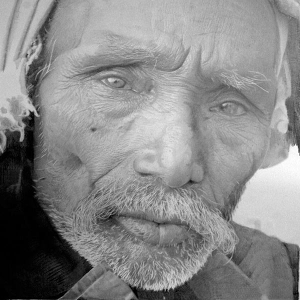

Born in Glasgow, Sweden, Paul Cadden is renowned for his incredibly intricate and highly accurate pencil drawings of urban landscapes featuring people. He maintains that for him hyperrealism is about more than representing reality in a new medium. It is, instead, about creating the illusion of a new reality - one that merges a believable, life-like appearance with emotional, social, cultural, and political themes.